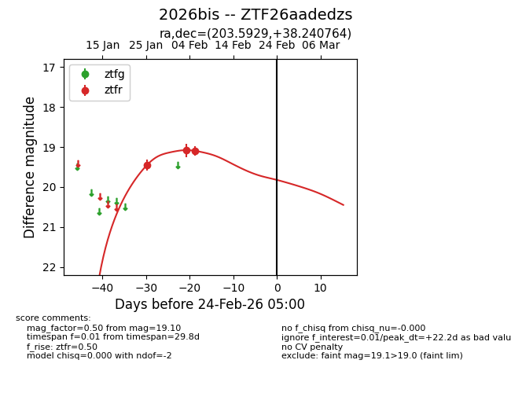
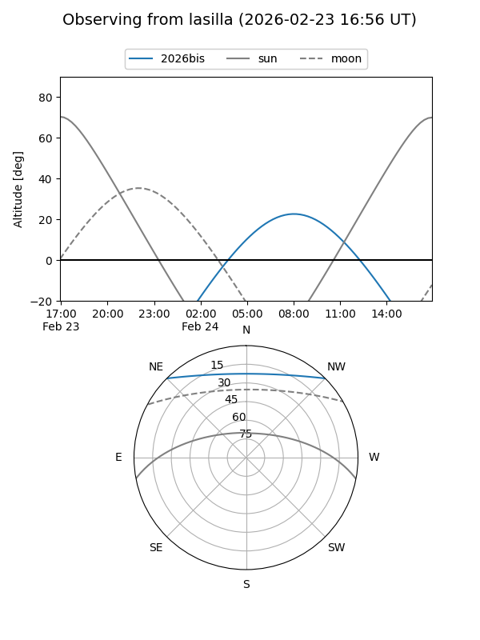
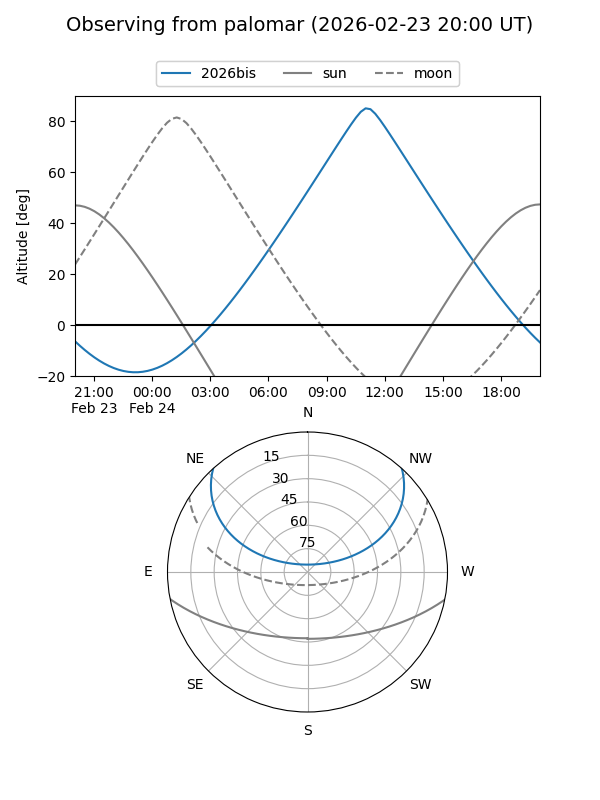

2026bis
Target 2026bis at 2026-02-24 09:08
Aliases and brokers:
FINK: link
Lasair: link
ALeRCE: link
TNS: link
YSE: link
alt names
ZTF26aadedzs (ztf,fink_ztf)
2026bis (tns,yse)
Coordinates:
equatorial (ra, dec) = 203.5929,+38.24076
equatorial (HMS+DMS) = 13:34:22.29,+38:14:26.75
galactic (l, b) = (86.6143,+75.70121)
Flags:
Photometry:
last ztfr=19.10
3 ztfr detections
Lightcurve

Visibility


Additional plots